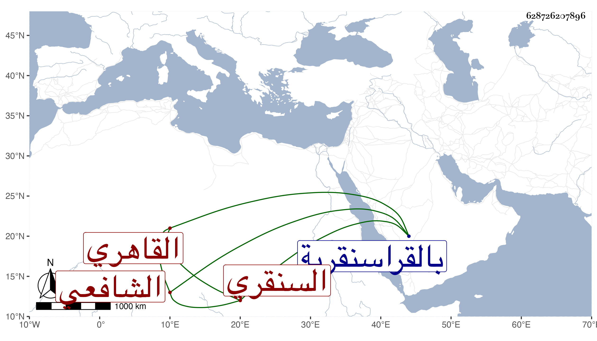

0902Sakhawi.DawLamic.ITO20230111-ara1.EIS1600.628726207896
Biography ID: 628726207896
312
عبد المغيث بن عبد الرحيم بن أحمد بن محمد المحب أبو الغيث أو أبو الغوث بن الزين أبي محسن القاهري السنقري الشافعي سبط البرهان الشنويهي الماضي ويعرف بابن الفرات . ولد في ليلة الجمعة سادس عشر جمادى الآخرة سنة أربع وثلاثين وثمانمائة بالقراسنقرية ونشأ بها فحفظ عند أبيه القرآن والعمدة وألفية الحديث والنخبة والشاطبية والمنهاج الفرعي وجمع الجوامع وألفية النحو وتوضيحها والجرومية وإلى الصرف من التسهيل والتلخيص والشمسية والحاجبية حتى العروض وعرض على شيخنا وباكير وأبي الفتح بن وفا وآخرين وأخذ في الفقه عن العلم البلقيني والجلال المحلي ومما أخذه عنه شروحه للورقات وللبردة ولجمع الجوامع ولغالب شرح المنهاج وأجازه بها والفخر المقسي في آخرين وعن السنهوري أخذ الأصول أيضا وعنه والأبدي والعز عبد السلام البغدادي أخذ العربية وكذا أخذها عن السيف الحنفي بل ولأجله شرع في حاشية التوضيح وعن الأبدي والعز أخذ المنطق وأخذ الصرف عن التقي الحصني بل لازمه في غير ذلك والفرائض عن البوتيجي وأبي الجود والحساب عن أبي البركات الغراقي في آخرين فيها وفي غيرها وسمع يسيرا على بعض الشيوخ ثم انجمع مع التقلل واستقر في إمامة البيبرسية برغبة ابن قمر وتعانى النظم وامتدح غير واحد من شيوخه بل أنشدني في أبياتا وكثر تردده إلي وكتبت عنه قوله :
| إله العرش يا ثقتي وذخري | أغثني سيدي ربي ودود |
| إذا ما الخل أسكنني بلحد | وفارقني وخلاني ودود |
وقوله :
| صبرت دهري أروم خلا | بمقصدي لا يرى مخلا |
| فلم أجد غير من تخلى | فعاقل الدهر من تخلى |
وقوله :
| إذا المرء لم يعدد لنعمة ربه | قيودا من الطاعات والحمد والشكر |
| تطير ولم ترجع كلمحة مبصر | ويسلبها المغرور من حيث لا يدري |
وهو ممن كتب على مجموع البدرى أبياتا وهجا الكمال الأسيوطي وقطن جامع المقسى وربما أم وخطب به والغالب عليه القطر به مع سرعة حركة .
